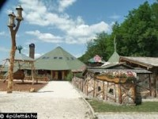
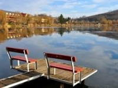

| Főoldal | Túrautak | Várak | Kulturális | Kilátók | Csillagvízsgálók | Egyéb |

Egyéb Szorakozóhelyek
Ipolytarnóc - Ipolytarnóci Ősmaradványok Látogatóközpont

Egy vulkánkitörés konzerválta az akkori állatok lábnyomait, lehetőséget biztosítva a ma emberének, hogy karnyújtásnyira kerüljön a számára egy olyan világ, amikor a ma élő ember kialakulása éppen csak hogy elkezdődött. Az időutazást 4D-s mozi, illetve a geológiai tanösvényen 3D- s vetítés is segíti, a miocén erdőben pedig eredeti méretükben találkozhatunk az egykor ezen a területen élt ősállatokkal – pl. a medvekutyával, az ősvízilóval vagy éppen az ősmenyéttel, míg a bejáratnál a Bükkábrányból előkerült 7 millió éves mocsárciprusok egy részét is meg lehet csodálni. A túra időtartama kb. 60-80 perc.
Nőtincs - Seholsziget Élménypark
Az élményt, lovarda, alkotó- és kovácsműhely, játszóterek, mini állatkert, kis vonat, erdei madárösvény, Csillagfény sátortábor és a Postakocsi Vendégház biztosítja
Bánk - Bánki-tó
Bánki-tó kedvelt kirándulóhely, horgászparadicsom és strand. A hangulatos sétaúton teljesen körbejárható, így csodálatos környezetét bárki felfedezheti. A szabadtéri tószínpad koncertek, előadások és filmvetítések helyszíne. A Tó Szabadidőközpont és Kalandparkban a látogatók 4 különböző nehézségű drótkötélpályáját próbálhatnak ki, ezen kívül kialakítottak streetball pályát, teniszpályát, tollaslabda pályát, óriás sakktáblát, a legkisebbeknek pedig homokozót.